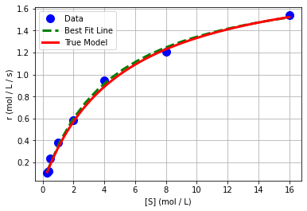
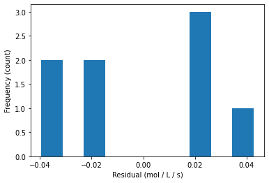
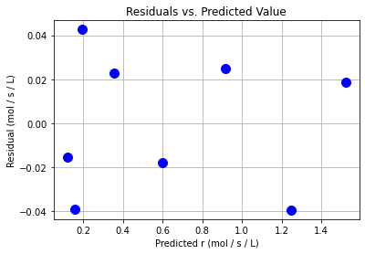
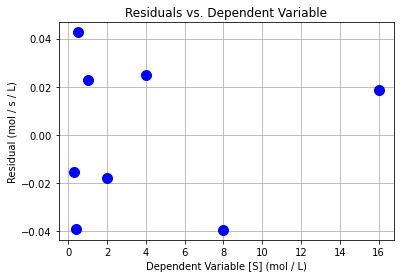

Nonlinear Regression
Contents
13.2. Nonlinear Regression#
CBE 20258. Numerical and Statistical Analysis. Spring 2020.
© University of Notre Dame
# load libraries
import scipy.stats as stats
import numpy as np
import scipy.optimize as optimize
import math
import matplotlib.pyplot as plt
13.2.1. Learning Objectives#
After studying this notebook, attending class, asking questions, and reviewing your notes, you should be able to:
Perform residual analysis for nonlinear regression (as a diagnostic plot)
Calculate standard errors (i.e., standard deviation) of the residuals
Calculate nonlinear regression best fit using Python
Assemble the covariance matrix for nonlinear regression
13.2.2. Nonlinear Regression#
Main idea: Solve the best fit optimization problem,
computationally. This works even if \(\hat{y_i} = f(\hat{\theta}, x_i)\) is a nonlinear function.
Recall \(\theta\) = [\(V_{max}\), \(K_m\)] for our example.
13.2.2.1. Step 1: Calculate Best Fit and Plot#
The good news is that scipy has a fairly robust function for nonlinear regression. We will start by defining our own function for the model:
## define function that includes nonlinear model
def model(theta,x):
'''
Michaelis-Menten model
Arguments:
theta: parameter vector
x: independent variable vector (S concentration)
Returns:
yhat: dependent variable prediction (r rate)
'''
yhat = (theta[0] * x) / (theta[1] + x)
return yhat
But scipy actually wants a function that takes three inputs and returns the residual vector. We will call our function model in this new function.
def regression_func(theta, x, y):
'''
Function to define regression function for least-squares fitting
Arguments:
theta: parameter vector
x: independent variable vector
y: dependent variable vector (measurements)
Returns:
e: residual vector
'''
e = y - model(theta,x);
return e
Now we can define an initial guess and call the least squares optimizer.
## experimental data (generated and discussed in the previous notebook)
Vmaxexact=2
Kmexact=5
Sexp = np.array([.3, .4, 0.5, 1, 2, 4, 8, 16])
rexp = Vmaxexact*Sexp / (Kmexact+Sexp);
rexp += 0.05*np.random.normal(size=len(Sexp)) # add random noise to simulate observation errors
rexp = np.array([0.10679829, 0.12073291, 0.23813671, 0.37799815, 0.58318205, 0.9434036, 1.20844411, 1.53945006])
## specify initial guess
theta0 = np.array([1.0, 5.0])
## specify bounds
# first array: lower bounds
# second array: upper bounds
bnds = ([0.0, 0.0], [np.inf, np.inf])
## use least squares optimizer in scipy
# argument 1: function that takes theta as input, returns residual
# argument 2: initial guess for theta
# optional arguments 'bounds': bounds for theta
# optional arugment 'args': additional arguments to pass to residual function
# optional argument 'method': select the numerical method
# if you want to consider bounds, choose 'trf'
# if you do not want to consider bounds, try either 'lm' or 'trf'
nl_results = optimize.least_squares(regression_func, theta0,bounds=bnds, method='trf',args=(Sexp, rexp))
theta = nl_results.x
print("theta = ",theta)
theta = [1.94625917 4.47747018]
Interesting, we got a different answer than with transformations & linear regression. Let’s revist that in a minute. We can plot of nonlinear best fit model.
# add true data (from previous notebook)
S = np.linspace(np.min(Sexp),np.max(Sexp),100)
r = Vmaxexact*S / (Kmexact+S)
# generate predictions
S_pred = np.linspace(np.min(Sexp),np.max(Sexp),20)
r_pred = model(theta, S_pred)
# create plot
plt.plot(Sexp,rexp,'.b',markersize=20,label='Data')
plt.plot(S_pred,r_pred,'--g',linewidth=3,label='Best Fit Line')
plt.plot(S,r,'r-',linewidth=3,label='True Model')
plt.xlabel('[S] (mol / L)')
plt.ylabel('r (mol / L / s)')
plt.grid(True)
plt.legend()
plt.show()

We see that it looks a lot better.
13.2.2.2. Step 2: Residual Analysis#
## calculate residuals
y_hat2 = model(theta,Sexp)
e2 = rexp - y_hat2
print(e2)
[-0.01541655 -0.03887927 0.04262985 0.02267733 -0.01774983 0.02508286
-0.03941088 0.01874723]
plt.hist(e2)
plt.xlabel("Residual (mol / L / s)")
plt.ylabel("Frequency (count)")
plt.show()

plt.plot(y_hat2,e2,"b.",markersize=20)
plt.xlabel("Predicted r (mol / s / L)")
plt.ylabel("Residual (mol / s / L)")
plt.grid(True)
plt.title("Residuals vs. Predicted Value")
plt.show()

plt.plot(Sexp,e2,"b.",markersize=20)
plt.xlabel("Dependent Variable [S] (mol / L)")
plt.ylabel("Residual (mol / s / L)")
plt.grid(True)
plt.title("Residuals vs. Dependent Variable")
plt.show()

Class Activity
Do the residuals pass the diagnostic tests? Discuss with your neighbor.
13.2.2.3. Step 3. Uncertainty Analysis / Calculate Covariance Matrix#
where \(J\) is the Jacobian of the residuals w.r.t. \(\theta\):
Fortunately, scipy approximates this Jacobian for us.
print("Jacobian =\n")
print(nl_results.jac)
Jacobian =
[[-0.06279474 0.0255815 ]
[-0.08200973 0.03272438]
[-0.10045264 0.03927836]
[-0.18256603 0.06486951]
[-0.30876252 0.09277262]
[-0.47183888 0.10832486]
[-0.64115561 0.10000865]
[-0.78134652 0.07426224]]
Notice this is NOT the same Jacobian used for error propagation in 13-01.
sigre = (e2.T @ e2)/(len(e2) - 2)
Sigma_theta2 = sigre * np.linalg.inv(nl_results.jac.T @ nl_results.jac)
print("Covariance matrix:\n",Sigma_theta2)
Covariance matrix:
[[0.00450233 0.02306357]
[0.02306357 0.14479753]]